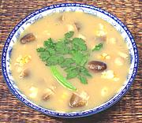

|
Hot & Sour Shrimp Soup #1Thailand - Tom Yum Kung | ||||
| Serves: Effort: Sched: DoAhead: |
4 soup ** 30 min Most |
A very popular soup, aromatic tasty and light. It can also be made with chicken (tom yum kai). The Chili Tamarind Paste is essential for its unique flavor. For a differently made recipe, see Hot & Sour Shrimp Soup #2. | |||
|
1 5 3 10 4 2 2 1 5 1/4 ---- |
lrg oz c T T T oz c ---- |
Lemon Grass stalk (1) Kaffir Lime leaf (2) Thai Chili Shrimp Stock (chicken) Chili Tamarind Paste (3) Fish Sauce (4) Palm Sugar (optional) Straw Mushroom (5) Lime Juice --Garnish Cilantro leaves |
Prep
|